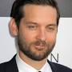
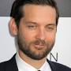

MOVIE REVIEW

Directed By:Sam Raimi
.jpg)
.jpg)
.jpg) 

Running Time:
Spider-Man 2: Evolution Rising: Unleashing the Power Within
Spider-Man 2 is a thrilling superhero film that delivers an exceptional blend of action, character development, and emotional depth. Directed by Sam Raimi, this sequel takes the web-slinging adventures of Peter Parker to new heights. Tobey Maguire reprises his role as Spider-Man with unparalleled commitment and brings a perfect balance of vulnerability and strength to the character. The film excels in exploring the struggles of Peter Parker as he grapples with his dual identity, personal sacrifices, and the weight of responsibility. Alfred Molina's portrayal of the villainous Doc Ock is captivating, providing a formidable adversary for Spider-Man while also giving depth to his motivations. The action sequences are breathtaking, showcasing Spider-Man's acrobatic abilities in a visually stunning manner. However, what truly sets Spider-Man 2 apart is its exploration of themes such as sacrifice, redemption, and the power of self-belief. .


Anna Paquin20 May,2023